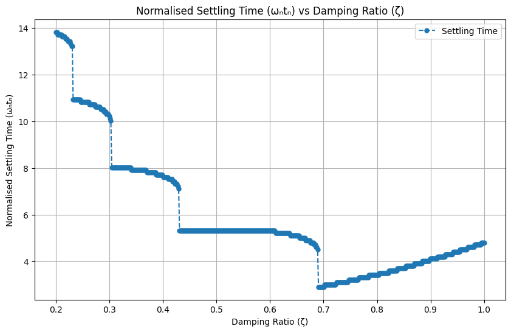
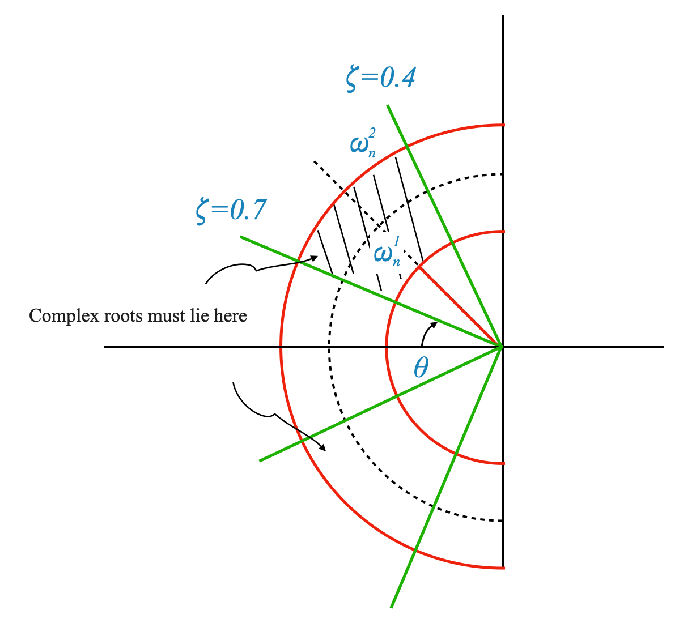
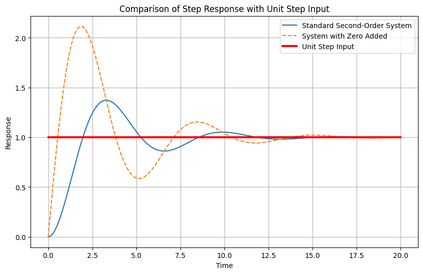
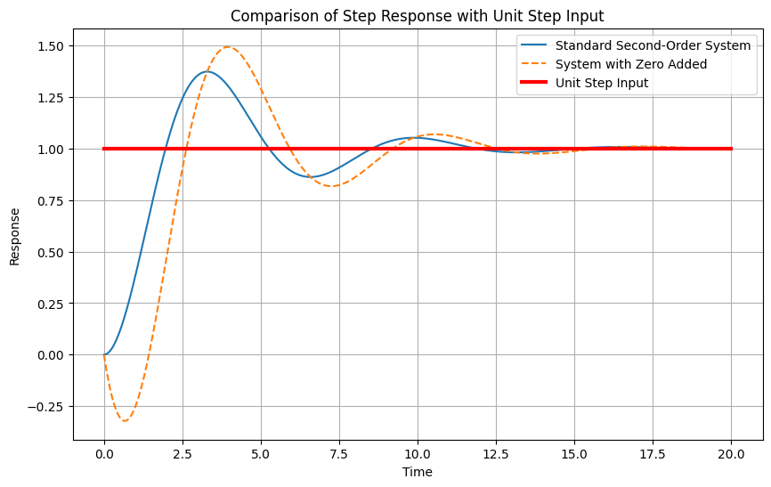
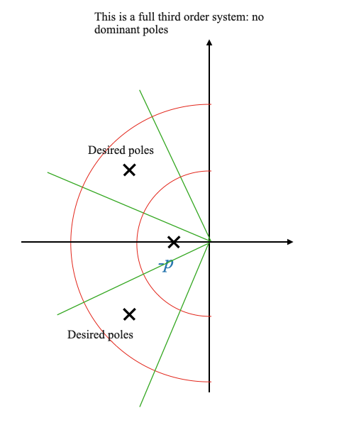
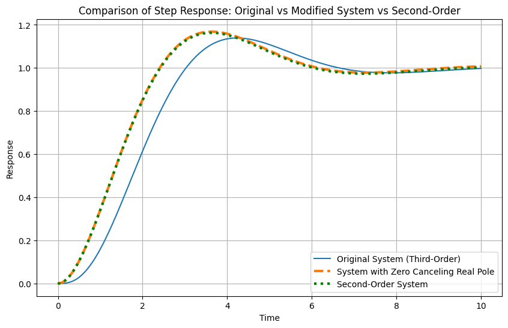

Understanding the Standard Second-Order System: Recap
We first summarize our previous discussion on the various transient response and steady-state response measures with respect to a standard second-order system. Recall the model of the standard second-order system:
Establish the time for the system to settle within a certain percentage of the steady-state value.
\[
t_s = \frac{4}{\zeta\omega_n}
\]
Steady-State Response
The steady-state response evaluates how well the system maintains its output at the desired value after transients have died out.
For a standard second-order system:
For a Step Input: Zero steady-state error.
For a Unit Ramp Input: Steady-state error \[ e_{ss} = \frac{2\zeta}{\omega_n} \]
System Performance Specification
High Natural Frequency ($ _n $):
The natural frequency, $ _n $, plays a pivotal role in determining the speed of response of a system. A higher $ _n $ leads to an improved speed of response, characterized by a lower rise time ($ t_r \() and reduced peak time (\) t_p $). Additionally, a higher $ n $ contributes to enhanced steady-state accuracy, denoted as $ e{ss} $. However, it’s important to note that the value of $ _n $ is subject to limitations imposed by system bandwidth and hardware constraints. For instance, achieving a high $ _n $ may necessitate a significantly high amplifier gain, which can, in turn, lead to saturation issues. This highlights the necessity for careful hardware design, including the implementation of filters that can mitigate issues related to noise and hardware limitations.
Regulating Damping Ratio ($ $):
The damping ratio, $ $, is the other critical parameter to consider after $ _n $ has been decided. $ $ exerts a significant influence on the system’s rise time, overshoot, and steady-state error. A lower value of $ $ generally results in a faster rise time, although the impact might not be very pronounced within the range of values typically considered for $ $. Additionally, a lower $ $ leads to a reduced peak time and improves the steady-state error in response to ramp inputs. However, it’s crucial to recognize that a lower $ $ also results in a higher peak overshoot and brings the system closer to instability.
The relationship between $ $ and the normalized settling time ($ _n t_s $) is complex and non-linear. The minimum $ _n t_s $ is achieved at $ = 0.68 $ for a 5% tolerance band, and $ = 0.8 $ for a 2% tolerance band. We observed that decreasing $ $ can lead to an increase in settling time. It’s essential to understand that rise time alone does not fully define the speed of response; the settling time is also a crucial factor. The trade-off between these parameters must be resolved based on the specific requirements of the application. It’s noteworthy that increasing $ $ beyond 0.68 for a 5% tolerance band, or beyond 0.8 for a 2% tolerance band, does not yield benefits, as it only results in a more sluggish system with reduced performance in both settling time and rise time. For a detailed analysis, refer to the ’Normalized Settling Time ($ _n t_s \() vs Damping Ratio (\) $)’ plot in the notebook titled ‘19_Design_of_feedback_control’ and reported below.

Summary
High Natural Frequency (\(\omega_n\)):
Leads to faster response speed.
Reduces rise time (\(t_r\)) and peak time (\(t_p\)).
Improves steady-state accuracy (\(e_{ss}\)).
Limited by:
Bandwidth considerations.
Hardware capabilities.
Challenges:
High \(\omega_n\) might require high amplifier gain.
Potential issues: saturation problems.
Solutions:
Appropriate hardware design.
Use of filters to mitigate noise and hardware limitations.
Regulating Damping Ratio (\(\zeta\)):
Affects rise time, overshoot, and steady-state error.
Lower \(\zeta\) leads to:
Faster rise time (though not significantly over typical \(\zeta\) ranges).
Lower peak time.
Improved steady-state error for ramp inputs.
Higher peak overshoot and closer proximity to instability.
Complex relationship with \(\omega_n t_s\) (settling time):
Minimum \(\omega_n t_s\) observed at:
\(\zeta = 0.68\) for 5% tolerance band.
\(\zeta = 0.8\) for 2% tolerance band.
Settling time considerations:
Decreasing \(\zeta\) can increase settling time.
Rise time is not the sole determinant of response speed; settling time is also crucial.
Application-specific conflict resolution:
Choose \(\zeta\) based on the application’s need to balance rise time and settling time.
Beyond certain points (\(\zeta > 0.68\) for 5% tolerance, \(\zeta > 0.8\) for 2% tolerance):
Leads to a sluggish system.
Negatively impacts both settling time and rise time.
Refer to the ‘Normalized Settling Time (\(\omega_n t_n\)) vs Damping Ratio (\(\zeta\))’ plot in notebook ‘19_Design_of_feedback_control’ for detailed insights.
Damping Ratio (\(\zeta\)) Range and Key Considerations
Industry Norms for $ $:
General Range: In standard industry practices, $ $ is usually set between 0.4 and 0.7, particularly when no specific quantitative performance criteria are provided by the user.
Tailoring for High Static Accuracy:
Steady-State Error Relationship: Considering the equation $ e_{ss} = $, achieving high static accuracy involves:
**Maximizing $ _n $**: A higher $ _n $ is preferable, which may necessitate incorporating specialized hardware to handle the higher performance requirements.
Minimizing $ $: A smaller $ $ is desired. In certain specific applications, a value as low as $ = 0.1 $ may be considered acceptable. Although this leads to a system with high oscillations and poorer transient performance, it offers enhanced static accuracy. However, it’s crucial to note that such low values of $ $ edge the system closer to instability, making it more sensitive to parameter variations and affecting its robustness.
Specialized Applications:
Example - Robotic Arm Control Systems: In applications like robotic arms, a higher $ $ value, approaching 1, might be more suitable. This ensures a slower but more controlled movement, preventing oscillations that could disrupt the arm’s path in its operating environment.
Typical $ $ Values for General Applications:
Preferred Range: For most applications, the focus remains within the range $ 0.4 < < 0.7 $, though there can be slight deviations from these limits based on specific requirements.
Natural Frequency ($ _n $) Considerations:
Dependence on System Hardware: The feasible range for $ _n $ is highly dependent on the system’s hardware and its configuration. Unlike $ $, there’s no standard range for $ _n $ as it varies significantly based on the physical and operational characteristics of the system.
Translating Performance Specifications
Translating performance specifications into closed-loop pole requirements is a critical step in control system design. This process involves determining where the poles of the closed-loop transfer function should be placed in the complex plane to meet the desired performance criteria like overshoot, rise time, settling time, and steady-state error.
The closed-loop transfer function for a standard second-order system is given by:
\[ T(s) = \frac{\omega_n^2}{s^2 + 2\zeta\omega_n s + \omega_n^2} \]
where $ $ is the damping ratio and $ _n $) is the natural frequency.
The poles of this transfer function are solutions to the characteristic equation:
Pop-up Question: What is the region in the s-plane for the closed loop poles given the requirements for \(\omega_n\) and \(\zeta\) that we have specified?
Answer:
To determine the ideal region in the s-plane for closed-loop poles based on specified values of natural frequency ($ _n \() and damping ratio (\) $), we need to consider both these parameters and how they influence the system’s response. Here’s a breakdown of the argument using the provided text:
1. Establishing a Range for Natural Frequency ($ _n $):
**Minimum $ _n $**: There should be a minimum value for $ _n $ to prevent the rise time from becoming too large. This can be visualized as a circle in the s-plane with a radius equal to this minimum $ _n $ value, denoted as $ _n^1 $.
**Maximum $ _n $**: The upper limit of $ _n $ is constrained by hardware capabilities and noise considerations. This can be represented by another circle with a radius of $ _n^2 $.
2. Considering Damping Ratio ($ $):
Range of $ $: In this case, we consider $ $ values of 0.4 and 0.7. These values dictate the angle made by the line from the origin to the pole with the negative real axis. The angles can be calculated as $ ^{-1}(0.4) $ and $ ^{-1}(0.7) $.
3. Ideal Region for Closed-Loop Poles:
**Combining $ _n $ and $ $**: The ideal region for the closed-loop poles is where these two considerations intersect. Specifically, the poles should lie within a sector defined by the angles corresponding to $ = 0.4 $ and $ = 0.7 $ and between the circles representing the minimum and maximum $ _n $ values.
Symmetry in S-Plane: Given the symmetric nature of the s-plane, a corresponding point reflecting the pole position would exist in the lower half of the plane.
Region Characteristics: This region, bounded by the red curves (representing the natural frequency considerations) and the green curves (representing the damping considerations), is where the system’s closed-loop poles should ideally be located for a standard system with two poles.
To summarise, for general applications, the closed-loop poles of a system should ideally be located within a specific region in the s-plane. This region is defined by the minimum and maximum values of the natural frequency ($ _n \() and within the angular bounds set by the specified damping ratios (\) $). This placement ensures a balanced system response, considering both the speed of response (influenced by $ _n $) and the level of overshoot and stability (influenced by $ $). This is shown in the picture below.

Handling Non-Standard Systems in Control Engineering
So far, our discussion has been focused on a standard second-order system, represented by the transfer function:
However, real-world systems often deviate from this standard model. They may have more than two poles, introduce zeros, or have other complexities. The next part of our course will explore how to handle these variations.
Handling Systems with a Zero
1. Introduction of a Zero in the System
In some systems, particularly those employing Proportional-Derivative (PD) control, a zero is introduced into the system dynamics.
For instance, applying PD control to a second-order system adds a zero to the transfer function.
2. Modified Transfer Function
The new transfer function, in the presence of a zero, can be represented as: \[ \frac{Y(s)}{R(s)} = \frac{\omega_n^2 (s + z)}{s^2 + 2\zeta\omega_n s + \omega_n^2} \] where $ s=-z $ is the zero of the system.
We want to understand the effects of the zero on the transient of the reponse.
3. Normalizing the Transfer Function
To facilitate analysis, we normalize the transfer function so the steady-state value of $ Y $ for a step input becomes 1. This is achieved by multiplying the transfer function by a factor of $ 1/z $. This does not affect the dynamics which we want to study.
The normalized transfer function becomes: \[ \frac{Y(s)}{R(s)} = \frac{\omega_n^2}{z} \cdot \frac{(s + z)}{s^2 + 2\zeta\omega_n s + \omega_n^2} \]
we can re-write this as: \[ Y(s) = \frac{\omega_n^2}{s^2 + 2\zeta\omega_n s + \omega_n^2}R(s) + \frac{1}{z} \cdot \frac{s\omega_n^2}{s^2 + 2\zeta\omega_n s + \omega_n^2}R(s) \]
We we write the transfer function in this way, we notice:
the left part is the standard second-order transfer function
the right part is the derivative of the second-order transfer function (multiplied by a scaling factor)
4. Effect on Transient Response
The introduction of a zero affects the transient response of the system.
Initially, the derivative component (due to the zero) is large, significantly impacting the early part of the response.
The overall effect is dependent on the position of the zero. A zero closer to the origin has a more pronounced effect compared to one further in the left-half plane.
To illustrate the effect of adding a zero on the transient response of a control system, and to compare it with the standard second-order system response, we can use Python’s control systems library. Below is a Python code snippet that accomplishes this task. The code generates a plot showing the response of a standard second-order system and the modified system with an additional zero, both subjected to a unit step input.
"""- 'omega_n' and 'zeta' are the natural frequency and damping ratio of the system, respectively.- 'zero_position' is the position of the additional zero in the s-plane.- 'system_standard' represents the standard second-order system.- 'system_zero_added' is the system with an additional zero.- The step responses of both systems are computed using ctl.step_response.- The responses are then plotted for comparison."""import numpy as npimport matplotlib.pyplot as pltimport control as ctl# System Parametersomega_n =1# Natural frequencyzeta =0.3# Damping ratio# Position of the zero - change this to see the effects of the zero on the responsezero_position =-0.5# Define the standard second-order systemnum_standard = [omega_n**2]den_standard = [1, 2*zeta*omega_n, omega_n**2]system_standard = ctl.TransferFunction(num_standard, den_standard)print(system_standard)# Define the system with an additional zeronum_zero_added = [1, -zero_position]den_zero_added =1system_zero_added =1/(-zero_position)*ctl.TransferFunction(num_zero_added, den_zero_added) * system_standardprint(system_zero_added)# Time range for the responset = np.linspace(0, 20, 500)# Compute the step responsest_standard, y_standard = ctl.step_response(system_standard, T=t)t_zero_added, y_zero_added = ctl.step_response(system_zero_added, T=t)# Unit Step Reference (Constant value of 1 across the time range)unit_step = np.ones_like(t_standard)# Plottingplt.figure(figsize=(10, 6))plt.plot(t_standard, y_standard, label='Standard Second-Order System')plt.plot(t_zero_added, y_zero_added, label='System with Zero Added', linestyle='--')plt.plot(t, unit_step, label='Unit Step Input', color='red', linestyle='-', linewidth=3)plt.title('Comparison of Step Response with Unit Step Input')plt.xlabel('Time')plt.ylabel('Response')plt.grid(True)plt.legend()plt.show()
1
---------------
s^2 + 0.6 s + 1
2 s + 1
---------------
s^2 + 0.6 s + 1

Understanding Transient Response with an Added Zero:
Standard Second-Order System Response:
The transient response of a standard second-order system (without a zero) typically shows a certain rise time, overshoot, and settling time, depending on its damping ratio ($ \() and natural frequency (\) _n $).
Effect of Adding a Derivative Component (Zero):
Adding a zero to the system effectively adds a derivative component to the response.
Initially, when the response is changing rapidly, the derivative of the response (slope) is large. This leads to a significant effect on the initial part of the transient response due to the zero.
As the response starts settling and the changes become less drastic, the derivative (slope) becomes smaller. Therefore, the influence of the zero diminishes in the later part of the response.
Visualizing the Effect of the Zero:
The transient response curve of the modified system gets ‘lifted up’ or altered primarily in the initial phase due to the significant derivative at the beginning.
The scale factor $ 1/z $ (where $ z $ is the position of the zero) influences the magnitude of this effect. A zero closer to the origin (small $ z $) has a more pronounced impact, while a zero further into the left-half plane (large $ z $) has a negligible effect.
Impact of Zero on Decay of Response:
The decay of the response is primarily governed by the real part of the system’s poles, specifically by $ e^{-_n t} $.
The added zero does not significantly change the decay rate dictated by the poles but alters the initial response dynamics.
Parameters to Show the Effect of Zero:
To better illustrate the impact of adding a zero, consider adjusting these parameters in the simulation above:
Position of the Zero ($ z $):
Varying the position of the zero closer or further from the origin will demonstrate its impact on the initial response.
Damping Ratio ($ $):
Altering $ $ can show how the system’s inherent damping interacts with the effects introduced by the zero.
**Natural Frequency ($ _n $)**:
Changing $ _n $ can help visualize how the system’s speed of response is affected by the zero.
By adjusting these parameters in a simulation environment, you can vividly see how the presence of a zero in the system’s transfer function modifies its transient response, especially in the initial phase following a step input. This is essential for understanding the design implications of such modifications in control systems.
Guideline on the Influence of a Zero
Relative Position of Zero and Complex Conjugate Poles:
The effect of a zero on the transient response of a control system is significantly related to its position relative to the system’s complex conjugate poles.
If a zero is approximately five times further away from the origin than the complex conjugate poles, its impact on the transient response is negligible.
Design Implications
Negligible Impact of Distant Zero:
When the zero is sufficiently far from the complex conjugate poles (five times further), you can design the system as if the zero doesn’t exist. This means the standard performance measures (like rise time, settling time, peak overshoot) applicable to a second-order system without a zero can still be used.
Adjusting Design Parameters:
If the zero is closer and significantly affects the response, adjustments in the system’s design parameters, particularly the damping ratio ($ $), may be necessary.
For instance, if a system designed for a damping ratio of 0.4 experiences increased overshoot due to the zero, the designer might opt for a slightly higher damping ratio (like 0.5) to compensate for this effect.
Design Verification through Simulation:
The actual impact of the zero and the efficacy of any compensatory design changes should be verified through simulation.
The simulation will confirm whether the chosen damping ratio achieves the desired performance, particularly in terms of peak overshoot.
Re-Entering the Design Cycle
Iterative Design Process:
The design process is iterative. If the initial design (with the adjusted damping ratio) does not meet the requirements, further adjustments and simulations are necessary.
This iterative process continues until the design achieves the desired transient response characteristics.
Example Scenario:
If a design for $ = 0.4 $ leads to an overshoot of 25% due to the presence of a zero, the designer might increase $ $ to 0.5 to reduce the overshoot. However, this change is then tested through simulation to ensure it meets the overall system performance criteria.
In summary, the text provides a practical guideline for control system designers on how to account for the presence of a zero in the system’s transfer function, particularly when it impacts transient response. The key takeaway is to assess the zero’s influence based on its relative position to the dominant poles and to adjust design parameters accordingly, verifying these changes through simulation to ensure they meet the desired system performance.
Right Half Plane Zeros and System Dead Times
Let’s now discuss the implications of having a zero in the right-half of the s-plane in a control system’s transfer function, particularly in relation to stability and system response.
Zeros in the Right-Half Plane
Impact on Stability:
A zero in the right-half plane (RHP) does not directly affect the stability of a system. Stability is generally determined by the poles of the system, not the zeros. A system remains stable as long as all its poles are in the left-half plane (LHP).
Physical Occurrence:
In most physical systems, zeros in the RHP are uncommon. However, they can appear in certain scenarios, particularly in systems with dead time.
Dead Time and Its Representation
Modeling Dead Time:
Dead time in a system is a delay between the input and the output response. It is often denoted as $ e^{-s_D} $ in the Laplace domain, where $ _D $ is the dead time.
A common approximation for dead time is $ e^{-s_D} $. This approximation introduces a zero in the RHP (at $ s = 2/_D $) and a pole in the LHP (at $ s = -2/_D $).
Effects of a Zero in the RHP
Influence on System Response:
A zero in the RHP can significantly alter the system’s response. Unlike a zero in the LHP, which typically enhances the system’s ability to track rapid changes in input (due to the derivative-like effect), a RHP zero can lead to undesirable characteristics in the response.
Reduced Overshoot and Increased Sluggishness:
The presence of a RHP zero tends to reduce peak overshoot in the system’s response. This is because the effect of the zero counteracts the rising action of the system’s response, akin to subtracting the derivative component rather than adding it.
More significantly, a RHP zero can make the system response more sluggish. This means slower response times and potentially poorer performance in tracking inputs or recovering from disturbances.
Practical Consideration in Process Control:
In process control systems where dead time is common, dealing with the effects of a RHP zero is a practical challenge. Engineers must design controllers that can compensate for the delay and sluggishness introduced by the dead time, ensuring the system can still meet its performance requirements.
In summary, while a zero in the RHP does not affect the stability of a control system, it can have a marked impact on the system’s transient response, often making it less responsive and reducing overshoot. These characteristics need to be carefully considered and addressed in control system design, especially in process control applications where dead time is a factor. Understanding and managing the effects of RHP zeros is crucial in ensuring that the system operates effectively despite these inherent challenges.
"""- 'omega_n' and 'zeta' are the natural frequency and damping ratio of the system, respectively.- 'zero_position' is the position of the additional zero in the s-plane.- 'system_standard' represents the standard second-order system.- 'system_zero_added' is the system with an additional zero.- The step responses of both systems are computed using ctl.step_response.- The responses are then plotted for comparison."""import numpy as npimport matplotlib.pyplot as pltimport control as ctl# System Parametersomega_n =1# Natural frequencyzeta =0.3# Damping ratio# Position of the zero - change this to see the effects of the zero on the responsezero_position =1# Define the standard second-order systemnum_standard = [omega_n**2]den_standard = [1, 2*zeta*omega_n, omega_n**2]system_standard = ctl.TransferFunction(num_standard, den_standard)print(system_standard)# Define the system with an additional zeronum_zero_added = [1, -zero_position]den_zero_added =1system_zero_added =1/(-zero_position)*ctl.TransferFunction(num_zero_added, den_zero_added) * system_standardprint(system_zero_added)# Time range for the responset = np.linspace(0, 20, 500)# Compute the step responsest_standard, y_standard = ctl.step_response(system_standard, T=t)t_zero_added, y_zero_added = ctl.step_response(system_zero_added, T=t)# Unit Step Reference (Constant value of 1 across the time range)unit_step = np.ones_like(t_standard)# Plottingplt.figure(figsize=(10, 6))plt.plot(t_standard, y_standard, label='Standard Second-Order System')plt.plot(t_zero_added, y_zero_added, label='System with Zero Added', linestyle='--')plt.plot(t, unit_step, label='Unit Step Input', color='red', linestyle='-', linewidth=3)plt.title('Comparison of Step Response with Unit Step Input')plt.xlabel('Time')plt.ylabel('Response')plt.grid(True)plt.legend()plt.show()
1
---------------
s^2 + 0.6 s + 1
-s + 1
---------------
s^2 + 0.6 s + 1

Handling Higher Order Systems
We are now ready to discuss the complexities involved in designing higher-order control systems and to introduce the concept of the “dominance condition.”
A standard second-order model, while useful, is often an oversimplification for real-world systems. In practice, systems are usually of higher order.
A standard second-order system can be represented by the transfer function:
where the \(p\) at the numerator normalised the response to 1.
Understanding the System’s Modes
In this third-order system, the system’s response is dictated by two modes:
Mode Associated with the Original Second-Order System:
This mode follows the form $ e^{-_nt} $, which is characteristic of the original second-order system.
Again, the residue at the system’s poles dictates the magnitude of this mode.
Mode Associated with the Pole:
This mode is represented by $ e^{-pt} $, where $ p $ is the position of the added pole in the system (if any).
The residue at this pole will influence how much this mode contributes to the overall system response.
Designing a Higher-Order System: Dominance Condition
The concept of “dominance condition” implies that for a higher-order system, the transient response is primarily influenced by two poles closest to the imaginary axis if the other poles are sufficiently far away.
This allows us to use the design principles of a second-order system for higher-order systems under certain conditions.
Dominance Condition:
The dominance condition is introduced as an important concept to deal with high-order systems. It states that in a higher-order system, if certain poles (typically the ones closest to the imaginary axis in the s-plane) are dominant, the system’s transient response can be approximated by considering only these dominant poles.
If other poles are sufficiently far into the left half-plane (more than five times farther from the origin than the dominant poles), their contribution to the transient response can be considered negligible.
Implication of Dominance Condition:
When the dominance condition is satisfied, the design and analysis of the higher-order system can be simplified to focus on the dominant poles. The parameters $ $ (damping ratio) and $ _n $ (natural frequency), which are only relevant for second-order systems, become relevant gain in this scenario.
In a higher-order system, such as a tenth-order system, the design may have multiple poles. The dominance condition becomes critical here:
If the non-dominant poles are significantly far from the dominant poles (say, more than five times the real part of the dominant poles), their contribution to the transient response is minor.
This allows the designer to focus on the dominant poles (typically the ones closest to the imaginary axis) for designing the system’s transient response.
Remember that \(\zeta\) and \(\omega_n\) are meaningless unless we are dealing with a second order system. It is our responsibility to verify that the dominance condition is satisfied.
In cases where the dominance condition is not met, the design becomes more complex. The system may need to be analyzed and designed using a more detailed approach, considering the effects of all poles and zeros. In this case, an iterative design process, including simulation, is necessary to validate the system’s performance against the desired specifications. Adjustments are made based on simulation results until the system meets its performance criteria (trial and error design).
Example: Pole-Zero Cancellation
Consider a scenario where the system has a problematic pole configuration that determine performance.

For this system, the performance are not driven by \(\zeta\) and \(\omega_n\). Note that in this case, there are no dominant poles and the system must be evaluated as a complete third order system.
The requirements are still expressed in terms of peak overshoot, rise time, etc. but we cannot simply use the approach we used so far.
A method to minimize the impact of an undesirable pole is to introduce a zero near it, effectively canceling its impact. This is known as the pole-zero cancellation method.
Pole-Zero Cancellation: If a zero is placed exactly at the location of a pole, it cancels the pole’s effect (the residue at that pole becomes zero). We can design a PD controller that places the zero where we need it.
For a third-order system, if this cancellation occurs, the system’s response might be effectively dictated by the remaining two poles, simplifying the design process.
In mathematical terms, the pole-zero cancellation changes the residues at the canceled pole, thereby altering the system’s response. This can be particularly useful for managing complex poles or poles that adversely affect system performance.
Note that this does not need to be a precise cancellation, placing the zero sufficiently close reduces the effect of the unwanted pole.
import numpy as npimport matplotlib.pyplot as pltimport control as ctl# Change this to simulate parameter noise in the placement of the zero# You can try 0 (no noise), 1e-2, etc.Delta =0#1e-2# System parametersomega_n =1# Natural frequency for complex conjugate poleszeta =0.5# Damping ratio for complex conjugate polesreal_pole =-2# Location of the real pole# Transfer function of the original third-order system# Two complex conjugate poles and one real polenum_original = [-real_pole*omega_n**2]# (s^2 + 2*zeta*omega_n s + omega_n**2)(s+real_pole)den_original = [1, -real_pole +2* zeta * omega_n, 2* zeta * omega_n *-real_pole + omega_n**2, omega_n**2*-real_pole] system_original = ctl.TransferFunction(num_original, den_original)# Add a zero to cancel the real pole# The zero is located at the position of the real polenum_modified = [1, -real_pole+Delta]system_modified = ctl.TransferFunction(num_modified, den_original)# Standard second-order systemnum_second_order = [omega_n**2]den_second_oder = [1, 2*zeta*omega_n, omega_n**2]system_second_order = ctl.TransferFunction(num_second_order, den_second_oder)# Time range for the responset = np.linspace(0, 10, 500)# Compute the step responsest_original, y_original = ctl.step_response(system_original, T=t)t_modified, y_modified = ctl.step_response(system_modified, T=t)t_second_order, y_second_order = ctl.step_response(system_second_order, T=t)# Plottingplt.figure(figsize=(10, 6))plt.plot(t_original, y_original, label='Original System (Third-Order)')plt.plot(t_modified, y_modified, label='System with Zero Canceling Real Pole', linestyle='--', linewidth=3)plt.plot(t_second_order, y_second_order, label='Second-Order System', color='green', linestyle=':', linewidth=3)plt.title('Comparison of Step Response: Original vs Modified System vs Second-Order')plt.xlabel('Time')plt.ylabel('Response')plt.grid(True)plt.legend()plt.show()

Conclusion
In conclusion, transitioning from a standard second-order system to higher-order systems in control design involves careful consideration of poles and zeros’ contributions. Techniques like normalization and pole-zero cancellation become essential in managing the system’s transient response effectively.